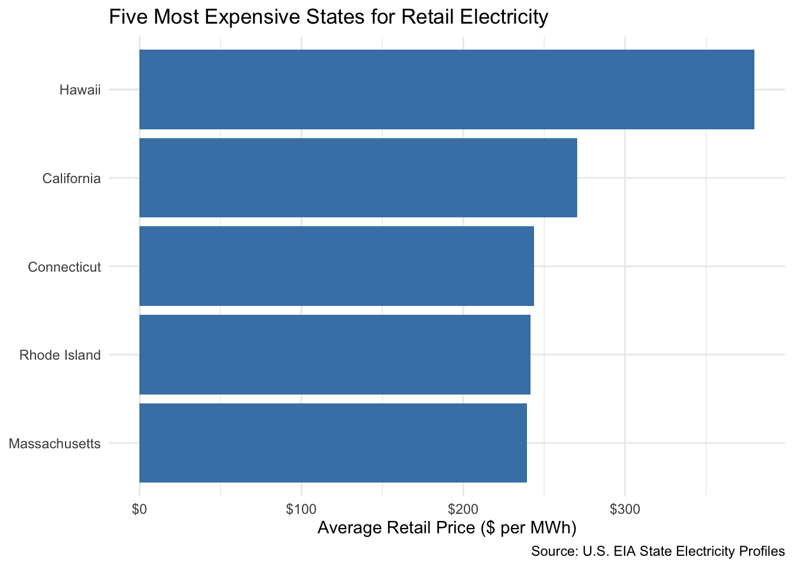
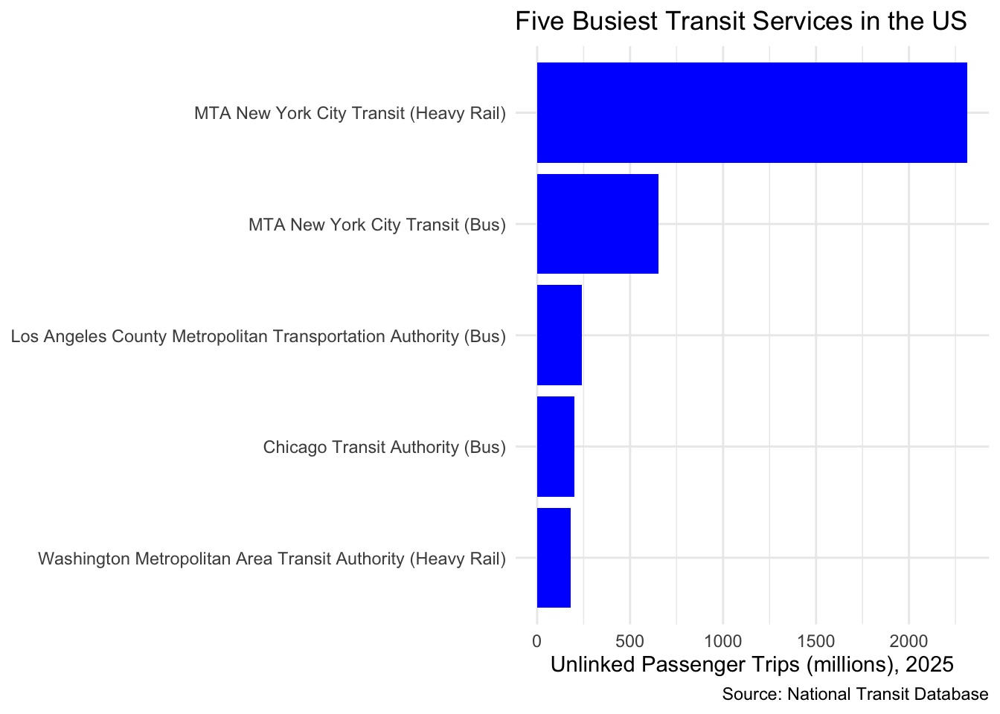
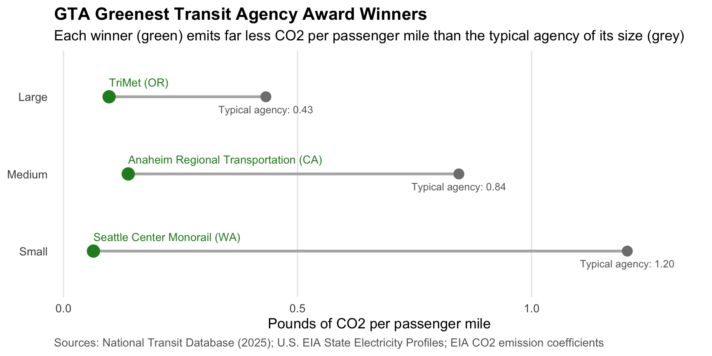
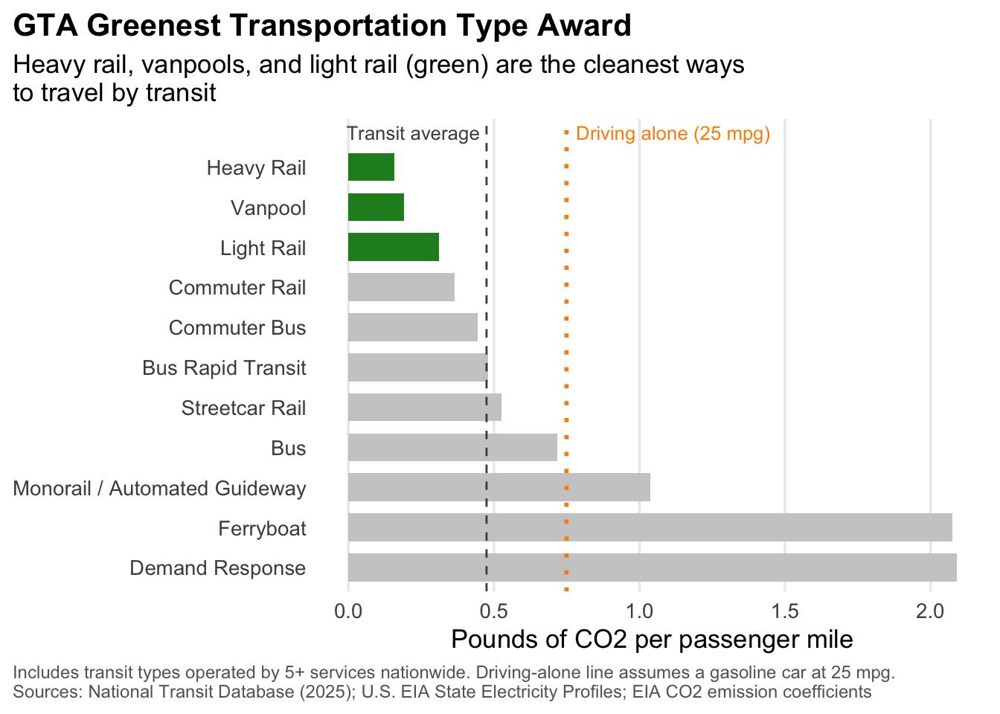

As the Executive Director of Green Transit Alliance (GTA) I want to find the most environmentally friendly transit agencies in the US. Not all public transportation is equally clean because fuel use and passenger numbers are different. I used NTD and EIA data to calculate CO₂ emissions per passenger mile and compare transit agencies fairly.
Data Acquisition
State Electricity Profiles
I used EIA data to look at electricity prices and CO₂ emissions in each state. The data also shows the main sources of electricity generation.
NTD Energy Consumption
I used 2025 NTD data to see how much fuel and electricity each transit agency used. This data helps calculate their CO₂ emissions.
NTD Service
I used 2025 NTD data to look at passenger trips and passenger miles for each transit agency. This helps compare emissions based on how many passengers they serve and how far they travel.
State Electricity Profiles
library(tidyverse)
Warning: package 'readr' was built under R version 4.4.3
Warning: package 'dplyr' was built under R version 4.4.3
── Attaching core tidyverse packages ──────────────────────── tidyverse 2.0.0 ──
✔ dplyr 1.2.0 ✔ readr 2.2.0
✔ forcats 1.0.1 ✔ stringr 1.5.1
✔ ggplot2 3.5.1 ✔ tibble 3.2.1
✔ lubridate 1.9.4 ✔ tidyr 1.3.1
✔ purrr 1.0.2
── Conflicts ────────────────────────────────────────── tidyverse_conflicts() ──
✖ dplyr::filter() masks stats::filter()
✖ dplyr::lag() masks stats::lag()
ℹ Use the conflicted package (<http://conflicted.r-lib.org/>) to force all conflicts to become errors
library(stringr)library(httr2)
Warning: package 'httr2' was built under R version 4.4.3
library(rvest)
Attaching package: 'rvest'
The following object is masked from 'package:readr':
guess_encoding
Warning: package 'fs' was built under R version 4.4.3
NTD Energy Consumption
load_ntd_energy <-function(){library(readxl)library(httr2)library(tidyverse)library(fs) DATA_DIR <- fs::path("data", "mp02") fs::dir_create(DATA_DIR, recurse=TRUE) NTD_ENERGY_FILE <- fs::path(DATA_DIR, "2025_ntd_energy.xlsx")if(!fs::file_exists(NTD_ENERGY_FILE)){request("https://www.transit.dot.gov/") |>req_url_path("sites", "fta.dot.gov", "files", "2026-09","2025 Energy Consumption_260806.xlsx") |>req_headers(`User-Agent`="Mozilla/5.0 (Macintosh; Intel Mac OS X 10.15; rv:149.0) Gecko/20100101 Firefox/149.0") |>req_perform(NTD_ENERGY_FILE) }if(file.info(NTD_ENERGY_FILE)$size <1e4){cat("I was unable to download the NTD Energy File. Please try again.\n")stop("Download failed. Please delete the corrupted file by running `unlink('data/mp02/2025_ntd_energy.xlsx')` and try again.") } to_numeric_fill_0 <-function(x){ x <-if_else(x =="-", NA, x)replace_na(as.numeric(x), 0) }read_excel(NTD_ENERGY_FILE) |>select(-c(`Reporter Type`, `Reporting Module`, `Gallons of Other Fuel`, `Other Fuel Description`)) |>mutate(across(-c(`Agency Name`, `Mode`, `TOS`), to_numeric_fill_0)) |>group_by(`NTD ID`, `Mode`, `Agency Name`) |>summarize(across(where(is.numeric), sum), .groups ="keep") |>mutate(ENERGY =sum(c_across(c(where(is.numeric))))) |>filter(ENERGY >0) |>select(-ENERGY) |>ungroup()}NTD_ENERGY <-load_ntd_energy()
Warning: There was 1 warning in `mutate()`.
ℹ In argument: `across(-c(`Agency Name`, Mode, TOS), to_numeric_fill_0)`.
Caused by warning in `replace_na()`:
! NAs introduced by coercion
NTD Service
load_ntd_service <-function(){library(httr2)library(tidyverse)library(fs) DATA_DIR <- fs::path("data", "mp02") fs::dir_create(DATA_DIR, recurse=TRUE) NTD_SERVICE_FILE <- fs::path(DATA_DIR, "2025_ntd_service.csv")if(!fs::file_exists(NTD_SERVICE_FILE)){request("https://data.transportation.gov/resource/4fir-qbim.csv") |>req_url_query(`$query`=paste("SELECT `_5_digit_ntd_id` AS `NTD_ID`", "`max_agency` AS `AGENCY`","`max_reporter_type` AS `reporter_type`","`max_organization_type` AS `organization_type`","`max_city` AS `city`","`max_state` AS `state`","`mode`","`type_of_service`","`max_primary_uza_code` as `uza_code`","`max_primary_uza_name` as `uza_name`","`max_primary_uza_area_sq_miles` as `uza_sq_miles`","`max_primary_uza_population` as `uza_population`","`max_service_area_sq_miles` as `service_area_sq_miles`","`max_service_area_population` as `service_area_population`","`questionable_record` as `flagged_likely_inaccurate`","`sum_unlinked_passenger_trips_upt` as `total_upt`","`sum_passenger_miles` WHERE caseless_one_of(`report_year`, '2025') limit 50000", sep=",")) |>req_headers(`User-Agent`="Mozilla/5.0 (Macintosh; Intel Mac OS X 10.15; rv:149.0) Gecko/20100101 Firefox/149.0") |>req_perform(NTD_SERVICE_FILE) }if(file.info(NTD_SERVICE_FILE)$size <1e4){cat("I was unable to download the NTD Service File. Please try again.\n")stop("Download failed. Please delete the corrupted file by running `unlink('data/mp02/2025_ntd_service.csv')` and try again.") }read_csv(NTD_SERVICE_FILE) |>mutate(flagged_likely_inaccurate =!is.na(flagged_likely_inaccurate))}NTD_SERVICE <-load_ntd_service()
Rows: 3762 Columns: 17
── Column specification ────────────────────────────────────────────────────────
Delimiter: ","
chr (11): NTD_ID, AGENCY, reporter_type, organization_type, city, state, mod...
dbl (6): uza_sq_miles, uza_population, service_area_sq_miles, service_area_...
ℹ Use `spec()` to retrieve the full column specification for this data.
ℹ Specify the column types or set `show_col_types = FALSE` to quiet this message.
Data Cleaning
NTD_ENERGY |>distinct(Mode)
# A tibble: 17 × 1
Mode
<chr>
1 DR
2 FB
3 MB
4 SR
5 TB
6 VP
7 CB
8 RB
9 LR
10 MG
11 CR
12 AR
13 TR
14 HR
15 YR
16 IP
17 CC
Which five states have the most expensive electricity?
library(gt)
Warning: package 'gt' was built under R version 4.4.3
EIA_SEP_REPORT |>slice_max(electricity_price_MWh, n =5) |>ggplot(aes(x =reorder(state, electricity_price_MWh),y = electricity_price_MWh)) +geom_col(fill ="steelblue") +coord_flip() +scale_y_continuous(labels = scales::dollar) +labs(title ="Five Most Expensive States for Retail Electricity",x =NULL,y ="Average Retail Price ($ per MWh)",caption ="Source: U.S. EIA State Electricity Profiles") +theme_minimal()

The chart shows the five states with the highest average retail electricity prices in the US. Hawaii has the highest price at around $380 per MWh, followed by California at $270. Connecticut, Rhode Island, and Massachusetts have similar prices of around $240–245 per MWh. Compared to the overall median of $113.9 per MWh, Hawaii’s price is about 3.3 times the median, while California’s is about 2.4 times. The other three states are also about 2.1 times the median. Interestingly, three of the five states are located in New England which suggest that regional factors may affect electricity prices. Hawaii’s high price may be related to its dependence on oil for electricity generation and the cost of transporting fuel to the islands.
Which five states have the dirtiest electricity mix?
EIA_SEP_REPORT |>slice_max(CO2_MWh, n =5) |>select(state, CO2_MWh, primary_source) |>gt() |>cols_label(state ="State",CO2_MWh ="CO2 (lbs per MWh)",primary_source ="Primary Source") |>fmt_number(CO2_MWh, decimals =0) |>tab_header(title ="Five States with the Dirtiest Electricity Mix")
Five States with the Dirtiest Electricity Mix
State
CO2 (lbs per MWh)
Primary Source
West Virginia
1,912
Coal
Kentucky
1,744
Coal
Wyoming
1,724
Coal
Missouri
1,456
Coal
Hawaii
1,426
Petroleum
Which five states have the dirtiest electricity mix?
West Virginia has the highest CO2 emissions at 1,912 lbs per MWh, followed by Kentucky (1,744) and Wyoming (1,724). Missouri and Hawaii also have high emissions at 1,456 and 1,426 lbs per MWh. Four of these five states use coal as their main source of electricity, while Hawaii mainly uses petroleum. This shows that states relying on fossil fuels tend to have higher CO2 emissions. Hawaii is also interesting because it has both high electricity prices and high CO2 emissions, which may be related to its dependence on petroleum.
On average, how many pounds of CO2 are emitted per MWh in the US?
On average, the US produces about 785 pounds of CO2 per MWh of electricity generated. This is much lower than the five states with the highest CO2 emissions. For example, West Virginia produces 1,912 pounds per MWh, which is about 2.4 times the US average.
How many times cleaner is NY’s energy mix than Texas?
New York’s electricity mix is cleaner than Texas’s. Texas produces about 1.53 times as much CO2 per MWh as New York. This means New York emits approximately 35% less CO2 per MWh of electricity generated compared to Texas.
NTD Energy Usage
Which five transit agencies used the most gallons of fuel?
NTD_ENERGY |>group_by(`NTD ID`, `Agency Name`) |>summarize(across(starts_with("Gallons"), sum), .groups ="drop") |>mutate(Total =rowSums(across(starts_with("Gallons")))) |>slice_max(Total, n =5) |>select(`Agency Name`, Total,Diesel =`Gallons of Diesel Fuel`,Gasoline =`Gallons of Gasoline`,CNG =`Gallons of Compressed Natural Gas`) |>gt() |>fmt_number(-`Agency Name`, decimals =0) |>cols_label(Total ="Total Gallons") |>tab_header(title ="Five Transit Agencies Using the Most Fuel",subtitle ="Gallons of combustion fuel, 2025")
Five Transit Agencies Using the Most Fuel
Gallons of combustion fuel, 2025
Agency Name
Total Gallons
Diesel
Gasoline
CNG
New Jersey Transit Corporation
41,721,414
38,144,027
2,055,895
1,521,492
MTA New York City Transit
40,816,461
30,217,934
4,270,146
6,328,381
Los Angeles County Metropolitan Transportation Authority
Liquefied natural gas (LNG) is the least commonly used fuel, with only 1 transit agency reporting its use. Palm Beach County’s Demand Response service in Florida used 223,362 gallons of LNG. Bunker Fuel and Kerosene were not used by any agencies in the dataset. Since different fuels are measured in different units, I compared the number of agencies using each fuel rather than their total consumption.
Which five transit services have the most UPT annually?
NTD_SERVICE |>group_by(NTD_ID, AGENCY, mode) |>summarize(total_upt =sum(total_upt), .groups ="drop") |>slice_max(total_upt, n =5) |>mutate(label =paste0(str_remove(AGENCY, ",? dba:.*"), " (", mode, ")")) |>ggplot(aes(x =reorder(label, total_upt), y = total_upt /1e6)) +geom_col(fill ="blue") +coord_flip() +labs(title ="Five Busiest Transit Services in the US",x =NULL,y ="Unlinked Passenger Trips (millions), 2025",caption ="Source: National Transit Database") +theme_minimal()

MTA New York City Transit (Heavy Rail) has the highest number of annual passenger trips about 2.3 billion trips in 2025. MTA’s bus service comes second with around 660 million trips, followed by LA Metro Bus, Chicago Transit Authority Bus, and Washington Metro Heavy Rail. New York MTA takes the top two spots. It shows how heavily people rely on public transportation in New York City. The subway alone has more than three times as many trips as MTA buses.
Are all states represented in this data?
missing_states <-tibble(abb = state.abb, name = state.name) |>anti_join(NTD_SERVICE |>distinct(state), by =c("abb"="state"))
Yes, all 50 states are represented in the dataset.
Calculating Emissions
LBS_DIESEL <-22.45LBS_GASOLINE <-18.73LBS_BIODIESEL <-22.45*0.8LBS_BUNKER <-24.78LBS_CNG <-116.65*0.114LBS_LNG <-116.65*0.0827LBS_LPG <-12.68LBS_KEROSENE <-21.78# Ethanol & hydrogen: no tailpipe CO2 (0)# - Step 1: collapse service data to one row per Agency + Mode -SERVICE_BY_MODE <- NTD_SERVICE |>mutate(NTD_ID =as.numeric(NTD_ID)) |>group_by(NTD_ID, mode) |>summarize(agency =first(AGENCY),state =first(state),upt =sum(total_upt, na.rm =TRUE),passenger_miles =sum(sum_passenger_miles, na.rm =TRUE),.groups ="drop")# - Step 2: join energy + service + state electricity profiles -EMISSIONS <- NTD_ENERGY |>inner_join(SERVICE_BY_MODE,by =c("NTD ID"="NTD_ID", "Mode"="mode")) |>inner_join(EIA_SEP_REPORT |>select(abbreviation, CO2_MWh),by =c("state"="abbreviation")) |># - Step 3: total CO2 emissions (lbs) -mutate(electric_kwh =`Kilowatt hours of Electric Battery`+`Kilowatt hours of Electric Propulsion`,co2_lbs =`Gallons of Diesel Fuel`* LBS_DIESEL +`Gallons of Gasoline`* LBS_GASOLINE +`Gallons of Bio-Diesel`* LBS_BIODIESEL +`Gallons of Bunker Fuel`* LBS_BUNKER +`Gallons of Compressed Natural Gas`* LBS_CNG +`Gallons of Liquified Nat Gas`* LBS_LNG +`Gallons of Liquified Petroleum Gas`* LBS_LPG +`Gallons of Kerosene`* LBS_KEROSENE + electric_kwh /1000* CO2_MWh )
I combined the three datasets by transit agency and transportation mode to calculate CO2 emissions. For fuel consumption, I multiplied the amount of fuel used by the EIA emission factors. For electricity, I used each state’s CO2 emissions per MWh. Since NTD and EIA use different fuel names, I matched them by making some assumptions, such as treating biodiesel as B20 and assigning zero direct emissions to ethanol and hydrogen. However, 11 rows were excluded because EIA data was unavailable for Washington, D.C. and Puerto Rico, including major transit services like WMATA. This may cause the total estimated emissions to be lower than the actual amount.
# A tibble: 3 × 2
size n
<fct> <int>
1 Small 364
2 Medium 92
3 Large 24
Larger transit agencies tend to produce more CO2 because they serve more passengers, so I divided emissions by ridership to make a fair comparison. I used emissions per passenger mile because it also considers how far passengers travel. I excluded agencies with fewer than 100,000 annual trips and divided the rest into small, medium, and large groups. The median emissions per passenger mile decrease as agency size increases, from 1.20 for small agencies to 0.844 for medium and 0.432 for large agencies. This suggests that larger transit agencies may be more efficient because they carry more passengers relative to their emissions.
AGENCY_EMISSIONS |>group_by(size) |>slice_min(co2_per_pmt, n =3) |>ungroup() |>select(size, agency, state, co2_per_upt, co2_per_pmt) |>gt(groupname_col ="size") |>fmt_number(c(co2_per_upt, co2_per_pmt), decimals =3) |>cols_label(agency ="Agency",state ="State",co2_per_upt ="CO2 per Trip (lbs)",co2_per_pmt ="CO2 per Passenger Mile (lbs)") |>tab_header(title ="Most Emissions-Efficient Transit Agencies by Size",subtitle ="Lowest CO2 per passenger mile, 2025")
Tri-County Metropolitan Transportation District of Oregon, dba: TriMet
OR
0.400
0.097
San Francisco Bay Area Rapid Transit District, dba: SF BART
CA
2.133
0.153
Port Authority Trans-Hudson Corporation
NY
0.835
0.180
Seattle Center Monorail has the lowest CO2 emissions per passenger mile among small agencies at 0.064 lbs, while Anaheim Regional Transportation has the lowest among medium agencies at 0.138 lbs. For large agencies, TriMet has the lowest emissions at 0.097 lbs, followed by SF BART and PATH. Interestingly, the most efficient agencies are not always the largest, suggesting that agency size alone does not determine emissions efficiency.
Award Winners
Greenest Transit Agency
GREENEST <- AGENCY_EMISSIONS |>group_by(size) |>slice_min(co2_per_pmt, n =1) |>ungroup() |>left_join(SIZE_MEDIANS, by ="size") |>mutate(agency =str_remove(agency, ".*dba: "),times_better = median_per_pmt / co2_per_pmt)GREENEST |>select(size, agency, state, co2_per_pmt, median_per_pmt, times_better) |>gt() |>fmt_number(c(co2_per_pmt, median_per_pmt), decimals =3) |>fmt_number(times_better, decimals =1, pattern ="{x}×") |>cols_label(size ="Size",agency ="Winner",state ="State",co2_per_pmt ="Winner (lbs CO2 / passenger mile)",median_per_pmt ="Group Median",times_better ="Cleaner than Median") |>tab_header(title ="GTA Greenest Transit Agency Award Winners",subtitle ="Lowest CO2 emissions per passenger mile, by agency size, 2025") |>tab_source_note("Sources: National Transit Database; U.S. EIA State Electricity Profiles")
GTA Greenest Transit Agency Award Winners
Lowest CO2 emissions per passenger mile, by agency size, 2025
Size
Winner
State
Winner (lbs CO2 / passenger mile)
Group Median
Cleaner than Median
Small
Seattle Center Monorail
WA
0.064
1.204
18.8×
Medium
Anaheim Regional Transportation
CA
0.138
0.844
6.1×
Large
TriMet
OR
0.097
0.432
4.4×
Sources: National Transit Database; U.S. EIA State Electricity Profiles
I compared CO2 emissions per passenger mile and divided the agencies into three groups based on their size. Seattle Center Monorail had the lowest emissions among small agencies at 0.064 lbs, while Anaheim Regional Transportation had 0.138 lbs for medium agencies and TriMet had 0.097 lbs for large agencies. Seattle Monorail produced about 19 times less CO2 per passenger mile than the small agency median. Also, Seattle Monorail and TriMet are both located in the Pacific Northwest, which may have something to do with their low emissions.
Greenest Transportation Type
MODE_EMISSIONS <- EMISSIONS |>filter(passenger_miles >0) |>group_by(Mode) |>summarize(n_services =n(),co2_lbs =sum(co2_lbs),passenger_miles =sum(passenger_miles),.groups ="drop") |>mutate(co2_per_pmt = co2_lbs / passenger_miles)MODE_TOP3 <- MODE_EMISSIONS |>filter(n_services >=5) |>slice_min(co2_per_pmt, n =3)ALL_MODES_AVG <-sum(MODE_EMISSIONS$co2_lbs) /sum(MODE_EMISSIONS$passenger_miles)WORST_MODE <- MODE_EMISSIONS |>filter(n_services >=5) |>slice_max(co2_per_pmt, n =1)MODE_TOP3 |>mutate(rank =c("1st", "2nd", "3rd")) |>select(rank, Mode, n_services, co2_per_pmt) |>gt() |>fmt_number(co2_per_pmt, decimals =3) |>fmt_integer(n_services) |>cols_label(rank ="Rank",Mode ="Transit Mode",n_services ="Services Nationwide",co2_per_pmt ="lbs CO2 / passenger mile") |>tab_header(title ="GTA Greenest Transportation Type Award",subtitle ="Lowest CO2 per passenger mile among modes with 5+ services, 2025") |>tab_source_note("Sources: National Transit Database; U.S. EIA State Electricity Profiles")
GTA Greenest Transportation Type Award
Lowest CO2 per passenger mile among modes with 5+ services, 2025
Rank
Transit Mode
Services Nationwide
lbs CO2 / passenger mile
1st
Heavy Rail
14
0.157
2nd
Vanpool
86
0.191
3rd
Light Rail
22
0.311
Sources: National Transit Database; U.S. EIA State Electricity Profiles
I compared CO2 emissions per passenger mile across different types of transit services. I only included transit types with at least five services to avoid comparing categories with very little data. Heavy Rail had the lowest emissions at 0.157 lbs per passenger mile, followed by Vanpool (0.191) and Light Rail (0.311). Heavy Rail produces about 3 times less CO2 per passenger mile than the overall average of 0.475 lbs. I was surprised that Vanpool ranked second, while Demand Response (2.09) and Ferry (2.07) had the highest emissions, about 13 times more than Heavy Rail.
Press Release
For Immediate Release
Green Transit Alliance Announces the Greenest Transit Agencies and Transportation Types
NEW YORK, November 2026
Green Transit Alliance (GTA) announced the greenest transit agencies and transportation types in the US using 2025 data. The study compared CO₂ emissions per passenger mile to find which services are the most environmentally friendly.
Greenest Transit Agencies
GTA divided transit agencies into small, medium and large groups based on annual ridership. Seattle Center Monorail ranked first among small agencies with 0.064 lbs of CO₂ per passenger mile. This is about 19 times lower than the group median. Anaheim Regional Transportation ranked first among medium agencies at 0.138 lbs and TriMet led large agencies at 0.097 lbs. Their emissions were about 6 and 4 times lower than their group medians.
Greenest Transportation Types
GTA compared transportation types with at least five services. Heavy Rail had the lowest emissions at 0.157 lbs per passenger mile. Vanpool came second at 0.191 lbs followed by Light Rail at 0.311 lbs. Heavy Rail produced about three times less CO₂ than the overall transit average of 0.475 lbs. Demand Response and Ferry had the highest emissions at around 2.1 lbs per passenger mile. This is almost three times the emissions from driving alone.
About GTA
Green Transit Alliance (GTA) studies the environmental impact of public transportation. The analysis used 2025 data from the National Transit Database (NTD) and the U.S. Energy Information Administration (EIA). Washington D.C. and Puerto Rico were excluded because of missing data. More information is available in the full report.
GREENEST |>mutate(label =paste0(agency, " (", state, ")")) |>ggplot(aes(y = size)) +geom_segment(aes(x = co2_per_pmt, xend = median_per_pmt, yend = size),color ="grey70", linewidth =1.2) +geom_point(aes(x = median_per_pmt), color ="grey50", size =4) +geom_point(aes(x = co2_per_pmt), color ="forestgreen", size =5) +geom_text(aes(x = co2_per_pmt, label = label),vjust =-1.3, hjust =0, size =3.6, color ="forestgreen") +geom_text(aes(x = median_per_pmt,label =paste0("Typical agency: ", sprintf("%.2f", median_per_pmt))),vjust =2.2, size =3.3, color ="grey40") +scale_x_continuous(limits =c(0, 1.35), expand =c(0, 0.02)) +labs(title ="GTA Greenest Transit Agency Award Winners",subtitle ="Each winner (green) emits far less CO2 per passenger mile than the typical agency of its size (grey)",x ="Pounds of CO2 per passenger mile",y =NULL,caption ="Sources: National Transit Database (2025); U.S. EIA State Electricity Profiles; EIA CO2 emission coefficients") +theme_minimal(base_size =13) +theme(plot.title =element_text(face ="bold"),panel.grid.major.y =element_blank(),panel.grid.minor =element_blank(),plot.caption =element_text(color ="grey40", hjust =0))

Figure 1
CAR_MPG <-25CAR_PMT <- LBS_GASOLINE / CAR_MPG MODE_EMISSIONS |>filter(n_services >=5) |>mutate(top3 = Mode %in% MODE_TOP3$Mode) |>ggplot(aes(x = co2_per_pmt, y =reorder(Mode, -co2_per_pmt), fill = top3)) +geom_col(width =0.7) +geom_vline(xintercept = ALL_MODES_AVG, linetype ="dashed", color ="grey30") +geom_vline(xintercept = CAR_PMT, linetype ="dotted", color ="darkorange", linewidth =1) +annotate("text", x = ALL_MODES_AVG, y =Inf, label ="Transit average",hjust =1.05, vjust =1.5, size =3.4, color ="grey30") +annotate("text", x = CAR_PMT, y =Inf, label ="Driving alone (25 mpg)",hjust =-0.05, vjust =1.5, size =3.4, color ="darkorange") +scale_fill_manual(values =c(`TRUE`="forestgreen", `FALSE`="grey80"), guide ="none") +scale_y_discrete(expand =expansion(add =c(0.6, 1.2))) +labs(title ="GTA Greenest Transportation Type Award",subtitle ="Heavy rail, vanpools, and light rail (green) are the cleanest ways\nto travel by transit",x ="Pounds of CO2 per passenger mile",y =NULL,caption ="Includes transit types operated by 5+ services nationwide. Driving-alone line assumes a gasoline car at 25 mpg.\nSources: National Transit Database (2025); U.S. EIA State Electricity Profiles; EIA CO2 emission coefficients") +theme_minimal(base_size =13) +theme(plot.title =element_text(face ="bold"),plot.title.position ="plot",plot.caption.position ="plot",panel.grid.major.y =element_blank(),panel.grid.minor =element_blank(),plot.caption =element_text(color ="grey40", hjust =0, size =9))

AI Usage
I used Claude to help with R coding and debugging when I ran into errors. I also used it to better understand some of the results. I reviewed the suggestions and checked the results before including them in my report.